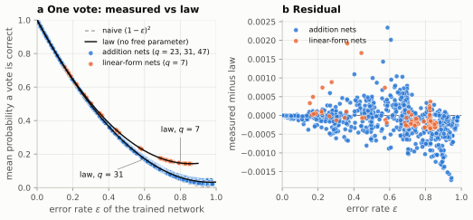

Beyond the Error Rate: Error Coherence and Voting-Based Self-Correction of Small Networks Trained on Modular Arithmetic
When does voting over a random self-reduction repair a trained network? An exact criterion, sharp worst-case radii and a depolarizing law, studied at toy scale
Abstract
A trained network approximating a homomorphism can be repaired without labels by a plurality vote over at random shifts , which equals when is right at both points. We compute the votes exactly for 1,373 snapshots from 86 training runs of small networks on modular arithmetic. Under the plurality vote, all 36 addition runs stay fully correctable beyond error rate 1/3 and 33 beyond the unique-decoding radius, but none up to the incoherent limit, where equally frequent independent errors break. Between error rates 0.6 and 0.7, the largest wrong-vote mass is a median 1.8 times the independent-error value. The rival answer is usually 0, from over-predicted output classes; subtracting a label-free background from votes raises the error rate up to which addition runs stay fully correctable from a median 0.53–0.62 to about 0.68. Multiplication networks break at the incoherent limit; the linear-map result rests on 3 runs. Mean two-query vote correctness matches the independent-error law to , but an identity reduces this to wrong values being evenly spread. Provably, any error field below error rate 1/3 (odd output group) or 1/4 leaves every input correctable, sharply; independent errors keep the truth the mode of the expected vote up to chance. Scope: toy scale, exact algebraic tasks, a corrector given the group law; no claims about language models; the mathematics is classical.
1 Introduction
A trained network is a fixed function. Repeating a computation and taking a vote, the classical remedy for unreliable components (von Neumann, 1956), does not help it: an input it gets wrong, it gets wrong every time. Voting over samples helps language models (Wang et al., 2023), but only against the part of the error that changes between calls (Liu, 2026).
Program checking has another remedy. If the target is a homomorphism, , then for every (Blum, Luby and Rubinfeld, 1993). Querying a program at the two uniformly random points and turns its fixed error pattern into noise in the vote , and a plurality over several returns at every input, provided is “not wrong too often”. Such an identity is a random self-reduction, and the voter is a self-corrector.
We ask whether, for a trained network, “not wrong too often” is a bound on the error rate, as in the classical guarantees, or a property of the structure of the errors. Borrowing a term from quantum computing, where coherent errors are systematic errors that add up instead of averaging out (Wallman and Emerson, 2016), we call errors incoherent when they act like independent noise with scattered wrong values, and coherent when they line up and reinforce one another under the randomisation. Unlike randomized compiling in quantum computing, the randomisation here does not remove such coherence.
We study the question where everything can be computed exactly: 1,373 snapshots from 86 training runs of small networks on modular addition, multiplication and a hidden linear map, with error rates from 0 to 0.98, each enumerated on its whole input group. Snapshots of one run are correlated, so the run is the unit of analysis. In brief: below the classical worst-case radius the error rate guarantees correction; above it, addition networks stay correctable well past that radius but break before independent errors of the same rate would, mainly because their outputs collapse onto a few classes, and the error rate does not predict where (Section 5). Multiplication networks, by contrast, break where independent errors would (Section 8). The contributions are:
- An exact criterion. Voting succeeds at if and only if the truth is the strict mode of one computable distribution, the twirled channel (Proposition 1).
- The worst case. For every error field, every input is correctable by the two-query plurality vote below error rate for odd and otherwise, both sharp (Theorem 2, Proposition 3). These thresholds equal the unique-decoding radius of the code, the largest distance at which the nearest homomorphism is unique, only when the smallest prime dividing is 2, or 3 with odd; otherwise they lie inside it, as for our addition tasks, where that radius is about 0.48.
- The incoherent case. For independent scattered errors a -query vote is correct with probability (Theorem 4, a restatement of Fourier multiplicativity; for binary outputs, the piling-up lemma), so in expectation there is no threshold short of chance (Corollary 5). A realised field on a finite group breaks earlier, at what we call the incoherent limit: 0.73 to 0.83 for the groups of our addition tasks (a heuristic estimate, and a weaker rigorous bound, in Section 3.3). Synthetic fields with equal error rates break just above and (at 0.267 and 0.355), at , near , or never (Section 4).
- Trained networks. Mean vote correctness follows the incoherent law because an identity ties it to the histogram of wrong values, which is nearly even (Proposition 9); coherence shows at the worst inputs. Under the plurality vote, addition networks stay fully correctable beyond in all 36 runs, beyond the unique-decoding radius in 33, up to the incoherent limit in none. The rival answer is usually the vote for 0, from over-predicted output classes (Section 5).
- Bias-subtracted voting. Subtracting from the vote counts the background predicted by the output histogram, which needs no labels, raises the median error rate up to which addition runs stay fully correctable from 0.53–0.62 to about 0.68 and makes no run worse, but it leaves the linear-map and multiplication thresholds unchanged, can hurt inputs whose answer is 0 at finite vote counts, and has no guarantee; it was devised after the zero-vote mechanism was found and evaluated on the same networks (Section 6).
- Baselines, other tasks, chains, evaluation. On memorisers, re-sampling the same input gives nothing at equal query budget, and a five-network ensemble gives nothing either, though by construction (Section 7). Multiplication is corrected with additions only, but its threshold is the incoherent limit, so there coherence does not limit correction; the linear map supports the coherence picture but rests on 3 runs (Section 8). At , 9 votes lengthen the 50% horizon of a chained sum from 13.5 to steps, while one vote halves it, and at even 65 votes give 6 steps (Section 9). The classical linearity test of Blum, Luby and Rubinfeld, applied to these networks, estimates the error rate without labels below 0.6 (Section 10). Error-rate-only predictions are optimistic in the tail.
Section 3 collects the theory. A reader interested mainly in trained networks can read Sections 3.1 to 3.3 and continue with Section 5: Propositions 6, 7 and 8 are used only in Sections 7, 10 and 9, and Table 1 lists how each statement was checked.
Scope. Exact algebraic maps on groups of at most 2,809 elements, small networks, and a corrector that is given the group law; we claim nothing about language models. The mathematics is classical (the corrector and tester of Blum, Luby and Rubinfeld; Fourier multiplicativity), and two worst-case thresholds coincide with known decoding radii. That the structure of errors, not only their rate, limits voting has been argued for repeated sampling of language models (Liu, 2026), informally for self-correction of language models (Brilliant, 2026, a preprint that is not peer reviewed and that we saw only through a search summary), and for quantum noise (Wallman and Emerson, 2016). What we add, to our knowledge, is the reading of the classical observation of Blum, Luby and Rubinfeld as a per-input mode criterion, the sharp plurality thresholds, and an exhaustive measurement of the twirled channels of trained networks.
2 Setting and notation
Task and model. and are finite abelian groups, , and the task is a homomorphism; the running example is on . A network is represented by its table of argmax predictions , with error field , error set and error rate . A random guess has error rate (chance), and the advantage is 1 for a perfect model, 0 at chance and negative below chance.
The self-corrector. A vote for the value at is with a uniform shift . It costs two queries, and since is a homomorphism, The self-corrector returns the plurality (most frequent value) of votes with independent shifts. A tie for first place counts as a failure throughout, and is the failure probability at . The corrector uses the group operations but no labels.
The twirled channel. , , is the twirled channel at . In quantum information, to twirl a noise process is to average it over a group of random operations (Emerson, Alicki and Życzkowski, 2005); here the group is the shifts of the input. The counts form an autocorrelation, so one fast Fourier transform gives every channel exactly. An input is correctable when the truth is the strict mode, ; the difference is the margin.
Incoherent errors. In the incoherent field the are independent, non-zero with probability and uniform on the wrong values. A vote that combines distinct queries is then correct with probability and takes each wrong value with probability (Theorem 4): the truth leads every wrong value by , and when the vote is the truth with probability and uniform otherwise. This is the classical counterpart of the depolarizing channel of quantum information, and by the coherence of a real error field we mean its departure from this form. The linearity test has . Multiplication is bilinear, not a homomorphism, and is corrected by the vote with .
3 Theory
All numbered statements are proved, in the appendix or, for Proposition 9, in Section 5.1. Those of this section were also checked on synthetic error fields (Table 1); the finite-size estimate in Section 3.3 is a heuristic. No trained network appears in this section.
3.1 The exact criterion
Proposition 1 (exact criterion and rate). Fix an input and votes with independent uniform shifts.
(a) The offsets of the votes from are independent draws from . Hence , where the vote counts are multinomial with trials and cell probabilities .
(b) as if and only if . If for some , then for every . If for some , then .
(c) If the truth is the strict mode, then where .
(d) If the truth is the strict mode and is a most likely wrong value with , then , with as in (c).
Part (a) is due to Blum, Luby and Rubinfeld, and (b) to (d) are standard large-deviation facts. Correctability at is thus a property of one computable distribution, not of the error rate: Section 4 has fields with that have uncorrectable inputs and fields with that have none. The bound (c) is loose and the rate (d) is approached slowly (Table 1), so we compute the exact multinomial probabilities of (a), and report bounds below an accuracy floor of .
3.2 The worst case: one third and one quarter
Theorem 2 (worst-case radius of the two-query plurality corrector). Let be any error field with error set . For every input and every :
(i) , that is, ;
(ii) ;
(iii) if , then .
Consequently every input is correctable when . If is odd, every input is correctable when . For the only wrong values that can tie with or beat the truth are elements of order 2.
Proposition 3 (sharpness). Let and , and put if is odd and if is even. The smallest number of errors for which some field leaves some input uncorrectable is . The smallest number for which some wrong value strictly beats the truth at some input is . For every there is a field with errors at which is uncorrectable.
Part (i) is the two-query bound of Blum, Luby and Rubinfeld and (ii) follows from it; part (iii) and Proposition 3 are, to our knowledge, not stated in the literature, though the proof is elementary and they may be folklore. The extremal field has errors isolated along the orbits of translation by (the cosets of the subgroup generated by ), all with the same wrong value . Each spoils two votes, with offsets and . If these disagree and the truth loses only when ; if they agree, and it loses when . When does not divide the breaking error rate lies slightly above , for example on .
Theorem 2 guarantees correctability, failure tending to 0 as grows, not a number of votes; just below the threshold the margin can be as small as (320 errors on leave a margin of ). Quantitatively, each vote changes by at most 1, so Hoeffding’s inequality, part (iii) and a union bound give for odd , and the same with in general; Proposition 1(c) is sharper.
Relation to the unique-decoding radius. The homomorphisms form an error-correcting code (Grigorescu, Kopparty and Sudan, 2006; Dinur et al., 2008). Two distinct homomorphisms agree exactly on , a subgroup whose index divides both and . So they agree on at most a fraction of the inputs, the smallest prime dividing , and a table closer than to a homomorphism has a unique nearest one (if , the zero map is the only homomorphism). This unique-decoding radius equals the threshold of Theorem 2 when , and when with odd. Otherwise it is larger: 0.4 for , 0.484 for , and at least whenever is even but is odd. Theorem 2 concerns one decoder, not the code: outside those two cases its guarantee stops strictly inside the unique-decoding radius, and the fields that defeat it contain no competing homomorphism.
3.3 Incoherent errors: the depolarizing law
Theorem 4 (depolarizing law). Let the errors , , be independent with and for every , and let . For distinct points and signs , the sum satisfies
Corollary 5 (no threshold short of chance). For even , whenever . In expectation over an incoherent field, the truth is therefore the strict mode of the vote at every error rate except exactly chance, including error rates above chance and .
This is not new mathematics: each independent error multiplies the characteristic function of the sum by , and for binary outputs the statement is the piling-up lemma of linear cryptanalysis (Matsui, 1993). We restate it in channel language because it is the reference for trained networks, with for the vote, for the linearity test and for the bilinear vote. It does not contradict coding theory, where beyond the unique-decoding radius one must accept a list of candidates or use advice, a few extra bits that say which candidate is meant (Dinur et al., 2008; Hirahara and Shimizu, 2026): an incoherent field is far from every homomorphism in the same structureless way.
Realised fields. Corollary 5 concerns the expected channel; on one realised field the truth must beat every wrong value at every input. Changing a single changes by at most 4, and for its mean is by Theorem 4, so McDiarmid’s inequality and a union bound bound the probability that some input is uncorrectable by At any fixed error rate other than chance this tends to 0 as grows with , so in the limit only finite size stops correction. The bound is weak on our groups: on it falls below 1 only for .
Finite size (heuristic). A sharper estimate is not proved. The gap has, near chance, standard deviation about , over about pairs ; treating the gaps as independent Gaussians puts the first failure at that is, at error rate . It matches simulation within 0.002 for (Table 1). We call the error rate up to which realised incoherent fields on a given group stay fully correctable, simulated as the median over 24 fields, the incoherent limit; for the groups of the trained addition networks it is 0.73 to 0.83 (Table 2).
3.4 Invariance twirl and transitive twirl
Test-time augmentation votes over transformations that keep the answer, such as for : an invariance twirl, moving the query within the inputs that share its answer. The self-corrector’s shift is a transitive twirl: it moves the query anywhere, at the price of a second query that removes the shift.
Proposition 6 (invariance twirl versus transitive twirl). Let on .
(a) The invariance vote , with uniform on , is the value of at a uniform point of the level set . If the error depends only on the answer, , every vote equals , and the output error rate is exactly for any number of votes.
(b) For the same field the translation vote at has the channel , uniform on : the twirled channel of on the answer group, which decides correctability as in Proposition 1.
(c) For an incoherent field an invariance vote (one query) is correct with probability on average, a translation vote (two queries) with .
So neither twirl dominates: the invariance twirl is the cheaper one on incoherent errors and useless on answer-dependent ones.
3.5 Estimating the error rate without labels
The linearity test checks at random , without labels. It is the self-tester of Blum, Luby and Rubinfeld, and its pass rate is well understood (Bellare et al., 1996; Ben-Or et al., 2008); we apply it, we do not propose a new estimator.
Proposition 7 (what the pass rate says). Let for independent uniform .
(a) (Unconditional.) , where is the fraction of inputs on which differs from any fixed homomorphism. In particular .
(b) (Incoherent errors.) Under the assumptions of Theorem 4, . Inverting with the real cube root, and .
(c) (Blind spot.) depends on alone. It carries information about the distance of to the nearest homomorphism, which need not be .
Feeding into the depolarizing channel and Proposition 1 predicts, without labels, how many votes a network needs.
3.6 Chains and horizon
Proposition 8 (survival of a chain). A model computes the running sum on from a uniform start with independent uniform . Let be the probability that the step on is correct ( raw, with fresh votes), , and the mean of .
(a) The probability that all of steps are correct is , and its -th root tends to , the largest eigenvalue (Perron root) of .
(b) If the row or the column sums of are constant (for example when depends only on the answer or only on the state), it is exactly .
(c) For independent uniform inputs it would be , with a 50% horizon of steps.
A constant failure rate per step is thus an assumption: if the raw model errs exactly when the current and next state both lie in a set of 15 of the 31 residues, but , and 20 steps survive with probability , not .
3.7 How the statements were checked
Table 1. How each statement was checked, on synthetic error fields only (code/theory_checks.py, results/theory_checks.json).
| Statement | Check | Outcome |
|---|---|---|
| Proposition 1(a) | exact routine against enumeration and Monte Carlo | agrees with enumeration to and with 200,000-sample Monte Carlo within |
| Proposition 1(c, d) | six channels, | bound holds but is loose (, , 40 votes: exact , bound ); near ties converge slowly ( at 160 votes) |
| Theorem 2 | all 3,386,884 fields on 23 pairs with | holds, minimal slack 0 |
| Proposition 3 | the 23 pairs; 70 pairs with , searched by number of errors | as predicted in all 23, and in 63 (ties) and 57 (strict wins) of the 70; the rest unresolved |
| Theorem 4 | 60 cells: , , 20 fields each | within at the realised error rate; the three cells with against the nominal rate share one field set with realised rate 0.908 |
| Corollary 5 | on | : every input correctable; : 4.0% (finite size) |
| Finite-size estimate | 24 fields for each of six from 11 to 61 | within 0.002 of simulation for ; 0.022 low at |
| Proposition 6 | of 31 answers wrong; scattered errors | invariance error exactly , translation corrects up to ; scattered: invariance cheaper (9 against 14 to 18 queries at ) |
| Proposition 7 | 80 incoherent and 20 coherent fields | RMSE of at most up to ; coherent: in all 20 |
| Proposition 8 | incoherent field, | decay rate within of |
4 Same error rate, different fates
Five synthetic families on show the gap between error rate and correctability (Figure 1; closed forms in the appendix). Scattered values is the incoherent field. Offset on a random set adds one value on a random set of inputs. Second homomorphism replaces by on a random set of density , an error rate of . The band families add on a band , with , and with on .
![Figure 1. Five synthetic error families at the same error rates. a Fraction of inputs at which the truth is the strict mode of the twirled channel. b Smallest margin over inputs; at or below zero, some input is uncorrectable. The random families are means over 8 fields, each point an exact enumeration of all votes. The band families exist only at the error rates w/n (dots); their values are exact, and each jump is drawn at the grid point with the lower value. Dashed lines: 1/4, 1/3, 1/2 and chance. Notice the constant offset on a random set, which never breaks, against a constant offset on a band, which breaks just above 1/3 (at 0.355, with h = 1 on \mathbb{Z}_{31}^2 \to \mathbb{Z}_{31}) or just above 1/4 (at 0.267, with h = 15 on \mathbb{Z}_{30}^2 \to \mathbb{Z}_{30}).](figures/fig_phase_diagram.svg)
Scattered values stay fully correctable up to in all 8 fields, near the finite-size estimate of their incoherent limit, 0.781. The offset on a random set never breaks at any of 101 error rates: its wrong votes each have probability . The same offset on a band breaks on , and with on on , while on that band breaks only on : inputs whose shift exceeds the band width see every error isolated along their orbit, the extremal field of Theorem 2, and the order of the wrong value decides between and . A constant offset on a contiguous region could arise in a learned model, though we did not observe one in our trained networks, where the dominant coherent form is output collapse (Section 5.5). The second homomorphism breaks at density (error rate ), where the corrector switches to ; only this family is limited by the code. Near , three families are fully correctable, one has lost a third of its inputs and one half.
5 Trained networks: where coherence shows
The zoo. All networks are one-hidden-layer perceptrons of width 256 on one-hot inputs, trained full batch with Adam and decoupled weight decay (code/make_zoo.py); we store each snapshot’s argmax prediction at every input. Addition networks learn , , with training fractions 0.3, 0.5 and 0.7, four seeds and weight decay 1; 30 log-spaced snapshots per run trace memorisation and the late generalisation known as grokking (Power et al., 2022): 36 runs, 1,080 snapshots, 841 with errors. Memorisers learn addition mod 53 without weight decay until the training set is fit, with 10% to 70% of the inputs or 5 of the 53 answers held out: 35 networks whose error set is the hold-out set by construction. The hidden linear map on has 9 runs (108 snapshots), multiplication mod 31 has 6 runs (150 snapshots). Each snapshot is compared with 20 matched i.i.d. fields (as many errors, at random positions, with random wrong values) and 20 shuffles (its own error values at permuted positions).
5.1 The mean vote sees only histograms
Proposition 9 (the mean is fixed by histograms). Let be the fraction of inputs with , so that , and the fraction with . Then with equality if and only if the wrong values are equally frequent, and .
Proof. counts the pairs with ; with these are the pairs with , of which there are . The inequality is Cauchy–Schwarz over the wrong values, whose shares sum to , and the last equality is algebra. The same count with in place of gives the statement about outputs.
The mean probability that a vote is correct therefore depends only on how often each error value occurs, not on where the errors are; it differs from the depolarizing law only by the unevenness of the wrong values and a term of order . Over the 984 networks with errors and a two-query vote, the largest deviation is and the mean , against for matched i.i.d. fields, while is 50 to 350 times worse (Figure 2). This agreement is not evidence of incoherence. It shows only that wrong answers are spread nearly evenly over the wrong values: the effective number of wrong values, , divided by has median 0.93 for addition. Coherence must be read from individual inputs.

5.2 Coherence at the worst input
Our coherence ratio is a network’s largest wrong-vote mass, , divided by its median over the 20 matched i.i.d. fields. For addition snapshots its median is 1.82 (per-run medians 1.11 to 2.37), and it grows with the error rate: 1.00 below , 1.25 between 0.3 and 0.4, 1.80 between 0.6 and 0.7, then 3.90, 8.16 and 10.04 in the three bins above 0.7. Against shuffles it is 1.00 to 1.03 below : there the small excess comes from the value histogram, above it from the arrangement of the errors. Linear-map snapshots have a median ratio of 2.42 and exceed all their i.i.d. fields in all 108 cases. The worst-input margin agrees: addition medians 0.204, 0.133 and 0.004 in the bins from 0.4 to 0.7, against 0.218, 0.169 and 0.045 for i.i.d. fields.
A structured error set costs nothing by itself: the class hold-out memorisers, whose errors fill five answer classes, have 9.2 times the i.i.d. spread of across inputs, yet a coherence ratio of 1.00 against shuffles and a worst margin of 0.803 against 0.809 for i.i.d. fields. What matters is whether wrong values line up under the shifts.
5.3 Where trained networks sit
Table 2. Correctability of the 36 addition runs (12 per modulus, plurality vote). Third column: the largest snapshot error rate in a run with every input correctable; fourth: the smallest with an uncorrectable input; per-run median [minimum, maximum]. In 31 runs the two bracket the run’s transition; in 5 (training fraction 0.3) the order is reversed, because correctability is not monotone in the error rate (see below). References from Section 3: the worst-case radius is for all three; unique-decoding radius ; incoherent limit, the median over 24 incoherent fields (minimum in parentheses).
| unique decoding | largest fully correctable |
smallest with an uncorrectable input |
incoherent limit | |
|---|---|---|---|---|
| 23 | 0.478 | 0.527 [0.471, 0.688] | 0.627 [0.584, 0.679] | 0.732 (0.715) |
| 31 | 0.484 | 0.557 [0.471, 0.696] | 0.690 [0.615, 0.724] | 0.779 (0.763) |
| 47 | 0.489 | 0.620 [0.482, 0.705] | 0.726 [0.661, 0.775] | 0.835 (0.822) |
Under the plurality vote, in all 36 addition runs every input stays correctable beyond , in 33 (11 of 12 per modulus) beyond the unique-decoding radius, and in none up to the incoherent limit (Table 2, Figure 3). None of the 263 snapshots with errors below the unique-decoding radius has an uncorrectable input; none of the 232 at or above the incoherent limit is fully correctable. The highest fully correctable snapshot () is memorising, right on 98.3% of its training inputs and 0.06% of the rest; 34 of the 35 memorisers are fully correctable. In 5 of the 36 runs the error rate does not even order correctability within the run: in these runs, all with training fraction 0.3, a snapshot has an uncorrectable input while one with a higher error rate has none (for example, uncorrectable inputs at but none at ).
![Figure 3. Addition networks stay correctable far beyond the worst case but break before incoherent errors would. a Fraction of correctable inputs, all 1,080 addition snapshots (36 runs). Dashed: worst case 1/3; vertical lines: incoherent limit per p (0.73, 0.78, 0.83). Every snapshot below 0.584 is fully correctable; beyond the line of its colour, none keeps more than 6% of its inputs correctable. b Per run, the largest snapshot error rate with every input correctable (in 5 runs a snapshot with a lower error rate already has an uncorrectable input). Black: medians; dotted: unique-decoding radius; coloured: incoherent limit.](figures/fig_correctable.svg)
5.4 How many votes
Table 3. Exact worst-input failure of the -vote corrector for six fully correctable networks chosen by a recorded rule (seed-0 snapshot nearest a target error rate; addition , memoriser ). Parentheses: Chernoff upper bound, where the exact value is below . Ratio: exact worst-input failure over the prediction from the error rate alone, at the largest where both exceed ( in brackets).
| Network | ratio [] | ||||||
|---|---|---|---|---|---|---|---|
| addition | 0.090 | () | () | () | 3.7 [17] | ||
| addition | 0.305 | 0.068 | () | () | 2.3 [33] | ||
| addition | 0.498 | 0.45 | 0.21 | 0.034 | 53 [129] | ||
| addition | 0.665 | 0.82 | 0.73 | 0.51 | 0.23 | 0.040 | 4.0 [129] |
| linear map | 0.276 | 0.14 | 0.033 | 142 [65] | |||
| memoriser | 0.300 | 0.060 | () | () | 2.5 [33] |
One vote is worse than the raw network for every network in Table 3, and for every network with a two-query vote below chance (provably for , where by Proposition 9 its mean correctness is at most ), because a vote uses two queries: mean failure 0.171, 0.515, 0.742 and 0.877 at , 0.305, 0.498 and 0.665 (Table 3, Figure 4). Three votes are worse too, except at ; beyond that, failure falls exponentially. The network with 50.2% accuracy fails on its worst input with probability after 129 votes, on average with .
Predictions from the error rate alone are optimistic in the tail. The depolarizing channel at the network’s predicts the mean at few votes (0.397 against 0.401 at , ) but underestimates the worst input more as grows: 53-fold at , and 142-fold at for the linear map; for the network, a worst-input Chernoff bound of needs 181 votes against 113 predicted. Part of the gap is finite size: matched i.i.d. fields reach a median 0.72 of the predicted worst-input exponent, fully correctable addition snapshots 0.60. Real votes agree with the exact values (70 comparisons, ).
![Figure 4. Failure against the number of votes k for four addition networks (p = 47, raw error rates 0.09 to 0.66; squares: raw). a Mean over inputs. b Worst input. Thick: exact; thin: predicted from the error rate alone. One vote is worse than raw, and so are three except at \varepsilon = 0.09; then failure falls exponentially. The thin lines match the mean at few votes but fall below it in the tail (by up to 3.4-fold at the largest k with an exact value), and further below the worst input: 53-fold at k = 129 for \varepsilon = 0.50. Values below 10^{-10} are omitted.](figures/fig_votes.svg)
5.5 The mechanism: the zero vote
The wrong value that competes with the truth is usually the zero vote, , with offset . It carries the largest wrong-vote mass in 83% of the addition snapshots with errors and 99.0% of those with (chance: about ), and in 367 of the 378 snapshots with an uncorrectable input it ties or beats the truth at every uncorrectable input with .
Its source is that the networks over-predict a few output classes. By Proposition 9 the mean zero-vote mass is the output collision , which is for balanced outputs. One of the two lowest-error snapshots with an uncorrectable input (, ) answers 0 on 62.5% of the inputs it gets wrong; its output collision is 4.36 times , and the zero vote ties or beats the truth at all 290 of its uncorrectable inputs. Such a network is partly close to a constant function, and since a vote is unchanged when a constant is added to , the corrector reads a constant table as the zero homomorphism. The wrong values are still evenly spread in histogram, which is why the mean cannot see them.
A two-histogram criterion follows: predict that most inputs are correctable if and only if , mean truth mass against mean zero-vote mass. It is right for 839 of 841 addition snapshots, all 35 memorisers and 100 of 108 linear-map snapshots, and no snapshot predicted to fail is fully correctable; but it concerns the average input, and 101 addition snapshots pass it with some input uncorrectable. The output collision needs no labels. For the linear map the mechanism is less complete: the zero vote is the largest competitor in all 108 snapshots but beats the truth at only a median 59% of uncorrectable inputs.
6 Bias-subtracted voting
If the two outputs of a vote were independent draws from the output histogram , the vote would equal with probability , computable without labels (at , the output collision of Proposition 9). The bias-subtracted corrector returns , with the number of votes equal to , so that is correctable with many votes if and only if (for multiplication, whose vote combines two differences, the background is , the convolution of with itself).
On addition networks it helps (Figure 5). Fully correctable snapshots rise from 463 to 521 of 841; none loses that status. The largest fully correctable error rate of a run (Table 2) rises in 11, 9 and 8 of the 12 runs for , 31 and 47 and falls in none, with medians 0.675, 0.686 and 0.685 instead of 0.527, 0.557 and 0.620. The incoherent limits barely move under the rule (0.732, 0.782, 0.835), so it closes 72%, 58% and 30% of the gap to them; what remains grows with . One run becomes fully correctable at , above its incoherent limit of 0.732; no or 47 run reaches its limit. With estimated from 1,000 sampled outputs (20 independent draws), the median over draws of the run medians is 0.675, 0.691 and 0.685, but single draws range from 0.627 to 0.682 (), 0.649 to 0.697 () and 0.677 to 0.685 (); in no draw does any run fall below the plurality. At finite , no input of the four addition networks of Table 3 can do worse for any , and mean failure falls by 8% to 45% (from 0.021 to 0.015 at and 33 votes). The snapshot of Section 5.5 with 290 uncorrectable inputs (, ) becomes fully correctable, with mean failure 0.0054 instead of 0.50 at 129 votes.
Where it does nothing or harms. The rule sees errors only through the output histogram. Linear-map outputs are nearly balanced (median of 1.02 to 1.11 in error-rate bins from 0.5 to 0.9), so in those bins the correction exceeds the deficit at only a median 5% to 9% of uncorrectable inputs; no run’s threshold changes, and 6,112 inputs gained are offset by 5,940 lost. No multiplication threshold moves either, though four snapshots with gain many inputs. The four tested synthetic families of Section 4 keep their thresholds; a new one, collapse to 0 on a random set, stays fully correctable up to density 0.89 instead of 0.49. In 176 addition snapshots, all with , some inputs lose correctability (2,690, against 124,654 gained), and 25 near-chance snapshots end with fewer correctable inputs. At finite the rule over-penalises the answer 0: in the snapshot above and in one with , every input with , , fails more often for (on average 0.29 instead of 0.047 at , ), although all stay correctable as . A constructed network answering 0 on the band of is fully correctable by plurality for to 15 but not under the rule.
The rule is a heuristic read off the zero-vote mechanism, not a theorem: it has no worst-case guarantee and addresses only output collapse. It was devised after that mechanism was found in these networks and evaluated on the same zoo; it has no fitted parameters, but no held-out runs were used.
![Figure 5. Bias-subtracted voting on the addition networks (code/exp_debias.py). a Fraction of inputs correctable with many votes, for the 841 addition snapshots with errors, under the plurality (blue) and under the rule \operatorname{argmax}_v\, [K_v/k - A(v)] with the label-free background A(v) = \sum_y \mu_y \mu_{y+v} of the output histogram (orange). Dots: snapshots; lines: medians in bins of width 0.05. The two rules agree below \varepsilon = 0.5; the mean fraction rises from 0.41 to 0.95 for 0.7 \leq \varepsilon < 0.8 and from 0.03 to 0.49 for 0.8 \leq \varepsilon < 0.9. b Per run, the largest snapshot error rate with every input correctable, under each rule; thin lines join the two values of a run (12 runs per modulus). Horizontal lines: incoherent limit, the median over 24 incoherent fields (0.732, 0.779, 0.835). No run gets worse and 28 of 36 improve; the medians rise from 0.53, 0.56 and 0.62 to 0.67, 0.69 and 0.68.](figures/fig_debias.svg)
7 Twirls and baselines at equal query budget
On the memorisers, whose logits are stored, we compare methods at equal numbers of queries per answer: same-input sampling (plurality of samples from the softmax), a five-network ensemble trained on the same split, the invariance twirl ( orbit votes ), the translation twirl ( self-corrector votes) and a concatenated twirl that replaces each query of a translation vote by a plurality of 3 orbit votes. All are computed exactly, ties fail, and each configuration has 7 networks (Table 4, Figure 6).
Table 4. Smallest budget per answer at which the mean error reaches / , on the grid (concatenated: 6, 18, 30, 66, 126, 258), identical for all 7 networks of a configuration; “never”: stuck at the value in parentheses. Columns: memorisers for addition mod 53 with 30% or 50% of the inputs held out (scattered errors, and ) or 5 answer classes held out (answer-dependent errors, ).
| Method | queries per vote | scattered, | scattered, | by answer, |
|---|---|---|---|---|
| Same-input sampling | 1 | never (0.300) | never (0.500) | never (0.094) |
| Five-network ensemble | 5 | never (0.300) | never (0.500) | never (0.094) |
| Invariance twirl | 1 | 18 / 34 | 34 / 130 | never (0.094) |
| Translation twirl | 2 | 66 / 130 | 130 / 258 | 18 / 34 |
| Concatenated twirl | 6 | 66 / 126 | 258 / not reached | 66 / 126 |
Re-sampling the same input gives nothing. Sampling converges to the argmax error, is worse at for all 21 memorisers, and gains at most . The ensemble’s error equals that of its typical member to all digits (one member of one ensemble is lower by ), but nearly by construction: the memorisers err on the same hold-out set, so this says nothing about ensembles in general. The twirls split as Proposition 6 predicts: on scattered errors the invariance twirl needs a quarter to a half of the queries; on answer-dependent errors it stays at the plain error at every budget, while the translation twirl reaches at . On organic errors, those of the grokking addition networks, the picture is mixed. On four addition snapshots () the invariance twirl wins on the mean at , 0.50 and 0.645 (at 0.09, wherever the mean exceeds ), but it loses on the worst input at large budgets for (from ) and 0.645 (at ). At the translation twirl is 290 times better on the mean at , because one answer class has 78.7% of its inputs wrong. The concatenated twirl does not pay: it is worse than the better pure twirl at every matched budget (only 3 inner votes were tried).
![Figure 6. Methods at equal query budget on two memorisers for addition mod 53: exact mean error over all 2,809 inputs against queries per answer Q. a Scattered errors (\varepsilon = 0.30): the invariance twirl reaches 2.7 \times 10^{-7} at Q = 34; the translation twirl needs about four times the budget. b Answer-dependent errors (\varepsilon = 0.094): the invariance twirl stays at the plain error; only the translation twirl corrects (1.0 \times 10^{-4} at Q = 18). Sampling converges to the plain error and the ensemble (triangle) equals it. The translation twirl is the self-corrector of Section 2. Small budgets are non-monotone because two votes can tie.](figures/fig_twirls.svg)
8 Other tasks: multiplication without multiplying and a hidden linear map
Multiplication. The four-query vote corrects with additions and subtractions only (Figure 7). Proposition 9 does not cover , so here the law is a real test of the mean: for the 55 snapshots with the per-vote correctness on inputs with follows with root-mean-square residual 0.0060 (i.i.d. fields: 0.0016). All 58 snapshots with errors and are fully correctable; per run the transition lies between medians of 0.460 and 0.627 (6 runs). Here coherence does not limit correction: matched i.i.d. fields stay fully correctable up to a median 0.531, so the threshold of the trained networks is the incoherent limit. Coherence appears only beyond it, as an abrupt collapse (correctable fraction 0.036 at , against 0.753 for i.i.d. fields), and in the 35 earliest snapshots (), whose votes are right less often than chance (0.0032 to 0.0314 against ): a near-constant network makes the vote 0, never the product of non-zero inputs. Correctable is not corrected: at , 129 votes (516 queries) still fail with mean probability 0.41.
Hidden linear map. For on the corrector knows only that is additive. Only the 3 runs with training fraction 0.4 learn; they lose all-input correctability between and , with no snapshot in between, while matched i.i.d. fields keep it to a median 0.677 [0.665, 0.690]. This fits the coherence picture but rests on 3 runs. Self-correcting the four unit vectors with 129 votes each (1,032 queries, for 2,401 inputs) recovers with probability at least 0.99 for exactly the 15 snapshots with , and at most 0.029 for all 90 with . Recovery shows that a network has learned the map, not that a poorly trained one hides it.
![Figure 7. Multiplication mod 31 with an adding-only four-query vote (150 snapshots, 6 runs) and the hidden linear map on \mathbb{Z}_7^4 with the two-query vote (108 snapshots, 9 runs). a Mean per-vote correctness on non-trivial inputs, with the laws for c = 4, q = 31 and c = 2, q = 7. For c = 2 the mean is fixed by the error histogram (Proposition 9); for c = 4 the law is a test, which the earliest multiplication snapshots fail by falling below chance. b Fraction of correctable inputs; grey: mean of 24 i.i.d. fields. Multiplication follows the i.i.d. curve to its limit, then collapses faster; the linear map loses its first inputs earlier (between \varepsilon = 0.458 and 0.573, about 1% of its inputs, against a median 0.677 for i.i.d. fields) and then stays to the left of the i.i.d. curve.](figures/fig_tasks.svg)
9 Long chains
Four fully correctable addition snapshots (, to ) compute the running sum of Proposition 8, raw or with votes per step. Table 5 gives the exact 50% horizon ; below 1, a single step fails more often than not.
Table 5. Exact 50% horizon (steps) of a chained sum mod 47, raw and with votes ( queries) per step. Asterisks: per-step failure below . There the value is over the mean per-step failure, which is bounded within 2% on both sides; it lies inside a wider horizon bracket from the row sums of (e.g. at , ). Only horizons up to steps were also simulated.
| raw | 3 | 5 | 9 | 17 | 33 | 65 | ||
|---|---|---|---|---|---|---|---|---|
| 0.050 | 13.5 | 6.8 | 25.9 | 710 | ||||
| 0.220 | 2.8 | 1.4 | 1.7 | 6.9 | 60 | 6,386 | ||
| 0.419 | 1.3 | 0.65 | 0.53 | 1.1 | 2.7 | 13.1 | 369 | |
| 0.616 | 0.72 | 0.37 | 0.26 | 0.39 | 0.57 | 0.88 | 1.9 | 6.1 |
The horizon grows exponentially with (Figure 8), from 13.5 steps raw to with 9 votes at . One vote halves it (ratio 0.50 to 0.52), three votes are still worse than raw except at , and at even 65 votes (130 queries per step) give 6 steps. The prediction from the error rate alone is optimistic, increasingly with : within 1.3% up to , too long at every , and at too long by factors of , 11, 3.2 and 3.2 for the four networks (exact over predicted: , 0.087, 0.32, 0.31). The Perron correction of Proposition 8, by contrast, changes these horizons by at most 1.2% (raw, ) and by under 0.6% with votes ( over the mean failure lies in ). Real-vote simulations agree with the exact survival curves (89 checkpoints, ). Voting until the leader is votes ahead needs 1.9 to 3.3 times fewer votes than a fixed at equal observed failure, in the 10 of 20 settings ( for four networks) whose observed failure some fixed matches (in 2 more, at , none does); where no failure was observed, the ratio against the 95% upper bound on failure is 0.95 to 2.5, so adaptive voting is not always cheaper.
![Figure 8. Horizon of a chained sum mod 47 computed by four addition networks (\varepsilon = 0.05 to 0.62), raw or with k votes per step. a Steps T_{50} until half of the chains have erred. Solid: exact (Perron root from the exact channels; below 10^{-9} per step, from the mean failure, see Table 5); dots: real-vote simulation (4,000 chains; 2,000 for \varepsilon = 0.22, k = 17); thin dashed: error-rate-only prediction. b Exact over predicted horizon: below 1 from k = 5 on, down to 10^{-4} at \varepsilon = 0.05, k = 65. The k axis is a doubling grid.](figures/fig_horizon.svg)
10 Label-free evaluation
The pass rate of the linearity test costs three queries per sample and needs no labels; we computed it exactly for 1,223 networks (Figure 9).
Below the estimate is accurate. The mean absolute error of is 0.0021 for the 364 addition snapshots with and 0.0004 for the memorisers, although their error set is the hold-out mask; 1,000 random triples give root-mean-square errors of 0.004 to 0.024 on five representative networks. Below these errors look incoherent to the three-query test: coherence lives in the tails.
Above about 0.7 the estimate is unusable. Errors range from to . is too high, above chance, for all 196 networks whose pass rate is below , and too low by more than 0.05 for 110. The 14 largest underestimates, all by more than 0.36, are early addition snapshots closest to the zero map, where roughly tracks the distance to that map (one with has ). In all, 59 addition and 60 linear-map snapshots are nearer to another homomorphism than to (the zero map in 22 and 7). The bound held for all 1,223 networks but is loose.
The vote prediction is never pessimistic and often optimistic. For 413 networks with , the votes predicted from for a mean failure of were exact for 199 and too few for 210 (51%): by up to 58 votes among the 397 networks with both counts at most 149, and in 12 more that need over 149 votes, of which one, with 290 uncorrectable inputs, never reaches the target (mean failure 0.53 at the 61 predicted votes, 525 times the target). Optimism rises from 2 of 77 addition snapshots below to 57 of 58 between 0.5 and 0.6. The true does no better (205 optimistic): the shortfall lies in the shape of the channel, not in the estimate.
On a network with collapsed outputs, the vote margin was not a safe confidence signal. Four addition snapshots were tested with 65 real votes. The margin between the two leading values separates right from wrong outputs on the two fully correctable ones with the highest error rates below the first uncorrectable one (area under the ROC curve 0.975 and 0.964; 0.04% and 0.20% wrong among outputs with margin at least 5), but not on the snapshot with 290 uncorrectable inputs (area 0.62; 44% wrong at margin 5, 24% at margin 10); the other snapshot at the same error rate, with 6 uncorrectable inputs, lies between (area 0.88; 2.1% wrong at margin 5).
Baselines and fixes have limited reach. Two-network disagreement (Jiang et al., 2022) underestimates the memorisers’ error rate at 70% hold-out (0.466 against 0.700), because wrong networks share their wrong answer on a third of the inputs where both err. Reading the homomorphism off self-corrected generators names the task below (addition) and 0.573 (linear map), but finds a different nearest homomorphism in only 22 of 59 and 7 of 60 cases.
![Figure 9. Evaluation without labels. a Error rate estimated from the exact pass rate of the linearity test against the true one, for 1,080 addition and 108 linear-map snapshots: accurate below about 0.6, failing both ways above 0.7 (too high where the pass rate is below 1/q; too low for some networks, worst near the zero map). b Votes for mean failure 10^{-3}, predicted from the pass rate against needed on the exact channel, for the 409 of 413 networks with 0 < \varepsilon \leq 0.6 that have at most 149 predicted votes. No network needs fewer votes than predicted; points are jittered by about 2% in both directions, so those on the diagonal scatter around it. The top row holds 12 networks needing more than 149 votes.](figures/fig_labelfree.svg)
12 Discussion
What the results say. For voting over a random self-reduction, the error rate of our addition and linear-map networks is a poor guide in both directions. Against the worst case it is too pessimistic: every addition run stays correctable past , most past the unique-decoding radius, and a network right on half of its inputs is repaired on its worst input to a failure below . Against incoherent noise it is too optimistic: under the plurality vote no addition snapshot at the incoherent limit is fully correctable (one run is under the bias-subtracted rule, Section 6), and error-rate-only predictions of votes and horizons are optimistic in the tail, for horizons by up to four orders of magnitude. In 5 of 36 runs it does not even order correctability within the run. What decides there is how the wrong values line up under shifts, which the twirled channel records and input averages cannot see. Multiplication networks are the exception: they break where incoherent errors would (Section 8).
The coherence is simple. Its main form here is output collapse: a network over-predicts a few classes, acts on part of its domain like a constant function, and the corrector, which sees only differences, reads that as the zero homomorphism. This is invisible to the mean vote correctness and, below error rate about 0.5, to the linearity test, but visible in the output histogram, without labels. Subtracting the background this histogram predicts repairs much of the collapse in addition networks (Section 6), but it is a heuristic aimed at this one mechanism: it cannot see coherent errors that leave the outputs balanced, as in the linear map, and at finite vote counts it can over-penalise the answer 0.
What would have to hold beyond toy tasks. The target needs a random self-reduction, which linear and low-degree maps have and some numerical functions can be given (Erata et al., 2026), but most tasks lack. The shifted queries must be inputs on which the model is as reliable as on the original; here the domains are uniform, whereas for natural data a random shift leaves the data distribution. And the corrector must beat using the given structure directly, which here it does not (Section 13). By analogy only, the distinction between errors that average out under a randomisation and errors that line up with it may help in thinking about voting in language models and agents; nothing here tests that.
Open questions. Which training dynamics cause output collapse, and does a penalty on the output collision remove it? Do correctors with more queries have sharp worst-case thresholds? Can the coherence ratio be estimated from outputs alone?
13 Limitations and what is not shown
Toy scale, exact tasks. Groups have at most 2,809 elements and outputs at most 53 classes, and the tasks are exact algebraic maps. Exact enumeration is the point of the design, but nothing here shows how the measurements change with scale.
The corrector is given the group law. For an exact homomorphism a few corrected generator values determine the whole function (Section 8 recovers the linear map from four), so there is no practical gain over using the structure directly. The experiments measure the structure of errors; they do not offer a useful algorithm.
One architecture, one recipe. All networks are one-hidden-layer perceptrons on one-hot inputs, trained full batch with Adam, and every family with weight decay uses the same value, 1. Other architectures and regularisers may produce differently structured errors, and the zero-vote mechanism may be specific to this setting.
Correlated snapshots, few runs. The run is the unit: 36 addition, 9 linear-map and 6 multiplication runs. Only 3 linear-map runs learn the task, so the linear-map threshold rests on 3 runs with no snapshot between 0.458 and 0.573. Per-run thresholds are brackets because snapshots are discrete, and correlations pooled over snapshots are descriptive. The memorisers’ error set is the hold-out mask by construction, which makes the ensemble baseline nearly uninformative.
Heuristics and computed quantities. The finite-size estimate of the incoherent limit is a heuristic checked by simulation; only a much weaker rigorous bound is proved (Section 3.3). Failures below are bounds. Horizons were simulated only up to steps; longer ones are computed from the transfer matrix, and those beyond about steps from a two-sided bound whose lower side uses the standard negative association of multinomial counts. The search for the votes needed (Section 10) assumes that failure stays below the target once there, checked in full on 43 of 413 networks. The exhaustive checks of Theorem 2 and Proposition 3 cover groups of at most 20 elements, with some pairs unresolved, and the remark after the proof of Theorem 2 is not machine-checked. The bias-subtracted rule (Section 6) was devised after the zero-vote mechanism was found in these networks and evaluated on the same zoo, with no held-out runs; it was compared only with the plurality, not with other label-free fixes, and its finite-vote behaviour was computed for six networks and with the exact output histogram only.
Limited search for prior work. arXiv, Semantic Scholar, DBLP, OpenReview, ECCC and Crossref were unreachable from the build machine, so prior work was found by web search only. No cited work was read in full text: descriptions rest on abstracts, listings and search summaries. This includes the two closest technical papers (Goldwasser et al., 2025; Erata et al., 2026) and the closest statement of our thesis (Liu, 2026). Seven reference entries are marked as not checked against the source. Every novelty statement is therefore “to our knowledge”.
Authorship and verification. This paper was conceived, implemented, run and written by AI agents (instances of Claude, built by Anthropic), coordinated by a workflow script in a single session at the request of Abafa Mukhamedov. The verification that happened is the following. code/theory_checks.py checks the statements of Section 3 on synthetic error fields: exhaustively for Theorem 2 and Proposition 3 on groups of at most 20 elements (some pairs unresolved), numerically for the others (Table 1); these checks test the statements, not the written proofs. In the same session, AI agents of the same model, not independent of the authors, then made a referee pass over the proofs, with its own exhaustive check of Theorem 2 on 72 small group pairs, which found no error in the proofs but several imprecise or overstated statements in the text, now corrected; audited the numbers in the text against the results files, finding misstated scopes, roundings and descriptions, now corrected; and re-ran the whole pipeline from a clean checkout, which reproduced every results file exactly apart from timing fields, every PNG figure and every zoo/ file byte for byte (three figures were relabelled afterwards; Section 14). No human has verified the proofs, the code or the text, and the paper is not peer reviewed.
14 Reproducibility
Everything ran on a 4-core CPU under Linux with Python 3.13.18, NumPy 2.5.3, SciPy 1.18.1, Matplotlib 3.11.2 and pandoc 3.1.3 (the PDF also needs Node with Playwright). From the paper directory, in this order:
python3 code/core.py --selftest # self-tests, about 6 s
python3 code/make_zoo.py # zoo/ and cache/, 136 s, 2 processes
python3 code/zoo_summary.py # 11 s
python3 code/theory_checks.py # Sections 3-4, 47 s, 2 processes
export OMP_NUM_THREADS=1 # for the six experiment scripts
python3 code/exp_channels.py # Section 5, 310 s
python3 code/exp_twirls.py # Section 7, 199 s
python3 code/exp_tasks.py # Section 8, 38 s
python3 code/exp_labelfree.py # Section 10, 273 s
python3 code/exp_horizon.py # Section 9, 116 s
python3 code/exp_debias.py # Section 6, 464 s
python3 build.py # index.html and paper.pdfEach script except the self-test writes one JSON file in results/ (make_zoo.py also writes zoo/); every number in the text is read from those files. The seven scripts that draw figures can redraw them from their JSON alone: --figs-only for exp_channels.py and exp_debias.py, --figure-only for theory_checks.py and the other experiment scripts. The tables in zoo/ are committed but the logits in cache/ are not, so make_zoo.py must run before exp_twirls.py. exp_channels.py reads results/theory_checks.json, and exp_debias.py reads the results of theory_checks.py, exp_channels.py and exp_tasks.py; exp_tasks.py imports code from exp_twirls.py, and exp_horizon.py from exp_labelfree.py. All seeds are fixed and recorded in the JSON files.
Determinism checks actually done: during the work, the zoo was built twice with identical array contents, and theory_checks.py, exp_channels.py, exp_twirls.py, exp_horizon.py and exp_debias.py were each run twice with identical results apart from timings. A final rerun of the whole pipeline above from a clean checkout, on the same machine, reproduced all nine results files with no differing value apart from timing fields, all zoo/ files byte for byte and all PNG figures byte for byte; each step took at most about 22% longer than listed. SVG figures differ between runs only in random element identifiers and the date. After that rerun, Figures 1, 2 and 6 were redrawn from the JSON with relabelled legends and, for Figure 1, the band curves drawn at their grid points. Identical tables are expected only on the same NumPy and BLAS build, which is why they are committed.
Proofs
Throughout, is the number of shifts with , and is the number of the votes with offset .
Proof of Proposition 1
(a) Since is a homomorphism, , which is . For uniform the offset has distribution by definition, and independent shifts give independent offsets, so the counts are multinomial. The plurality returns exactly when for all .
(b) By the law of large numbers almost surely for every . If for all , then almost surely for all large , so . If for some , then and . If for some , the pair is exchangeable, so . The two events cover the sample space, so each has probability at least , and the first implies failure.
(c) Write and . Failure implies for some . The difference is a sum of independent steps equal to , , with probabilities , , . For every , Markov’s inequality gives If , the choice turns the right-hand side into with . If the event is , of probability . Summing over gives the bound. The requirement is where is used.
(d) The base increases with on ; write . By (c), , so . For the other direction, with . Let and define a new probability measure by the density . Under the steps of are still independent and equal and with the same probability each. Therefore For a symmetric walk with steps in the local limit theorem gives for some and all . (Two values are used so that the argument also covers , where has the parity of .) Hence and .
Proof of Theorem 2
For all offsets are zero and the claims are trivial. Let have order . Translation by partitions into orbits, each a cycle . Fix one cycle, write for and ; the are the values of on this orbit. Let be the number of error points on the cycle, and let and be the numbers of with and with . We show Summing over the orbits gives (i), (ii) and (iii).
If then and . If then and .
Let . The error points split into maximal runs of cyclically consecutive error points, of lengths with . Call the difference touched if or . A run of length touches exactly differences, the inside it and the two at its ends, and no difference is touched by two runs, because two adjacent error points lie in the same run. So differences are untouched, and each of them equals 0. Since , this gives .
Now consider the differences touched by one run, and let and be the numbers of them equal to and to . Always . If , then . If and the error value is , the two touched differences are and ; both equal only if , so whenever . Since only touched differences can equal , and, if , the same computation with in place of gives .
The consequences follow because whenever the right-hand side of (ii) or (iii) is positive, and because a group of odd order has no element with other than .
Remark (not part of the exhaustive check). The proof shows slightly more. A value of order 2 gains the extra count only from isolated errors whose value is itself. If the error field never takes a value of order 2, the bound (iii) holds for every , and the guarantee holds for even as well.
Proof of Proposition 3
The lower bounds are Theorem 2: an input can be uncorrectable only if , and a wrong value can strictly win only if .
Construction. Choose with if is odd, and with if is even. Fix of order . On each orbit of the positions are pairwise non-adjacent on the cycle, so the orbits offer positions at which errors are isolated. Place errors of value at such positions. Each isolated error touches two differences, equal to and , and all other differences vanish. Hence , and in the odd case, in the even case. So .
Ties. Since for every and is an integer, . Taking gives for the chosen , which was arbitrary.
Strict wins. We need . If , then and is an integer, so and the construction applies. If and has an element of order , then , so and again . In the remaining case every non-zero element of has order 3. Take any ; its orbits have length 3. Put one error of value on every orbit but one, and on the last orbit put the values . An orbit with one error has differences and contributes 1 to and 1 to . The last orbit has differences and contributes 0 to and at least 2 to . So with errors.
Proof of Theorem 4 and Corollary 5
Let be a non-trivial character of . Since , The distribution of is invariant under , so as well. The points are distinct, so the errors are independent and , while the trivial character gives 1. By Fourier inversion on , which is the claim. The difference of the two probabilities is , positive for even and . The queries of the vote, and , are distinct when ; those of the linearity test, , , , when , and ; those of the bilinear vote when and .
The finite-size estimate (heuristic). For fixed and , is the sum over of . Each term has mean and variance near chance, where , and the terms are nearly uncorrelated. The gap is thus approximately Gaussian with mean and standard deviation . The smallest of such gaps is about standard deviations below the mean, and setting it to zero gives the estimate in the text. The independence and Gaussian assumptions are not justified here.
Closed forms for the synthetic families
For the two random families the statements are expectations over the random set, for ; the band formulas are exact.
Constant offset on a random set of density , . with and . The margin is .
Second homomorphism. Let on a random set of density and elsewhere, , , and . If neither nor is in , then ; if both are, ; if exactly one is, is or , uniform on the image of . Hence and . The truth is the mode if and only if ; beyond that the mode is and the corrector returns . The error rate is .
Band. Let be a surjective homomorphism and if , else 0, so . For with let be the cyclic distance of from 0 and , the number of band positions that the shift moves out of the band. Then and if , while if . So is uncorrectable if and only if , respectively . The band has uncorrectable inputs exactly for , respectively , and these are the inputs with , respectively .
Proof of Proposition 6
(a) The map is a bijection from onto the level set of through . If , then is constant on level sets, so every vote equals .
(b) with , which is uniform on when is uniform on . Proposition 1 then applies.
(c) An invariance vote is correct exactly when the sampled point of the level set is not an error, which has probability on average over level sets. The translation vote is Theorem 4 with .
Proof of Proposition 7
(a) Let be a homomorphism and the fraction of inputs with . If agrees with at , and , the test passes. Each of the three points is uniform on , so the test fails with probability at most by the union bound. Take .
(b) . For , , the three points are distinct and Theorem 4 applies with . The remaining pairs are a fraction at most of all pairs.
(c) The definition of does not involve .
Proof of Proposition 8
(a) As long as all steps so far are correct, the state follows the true running sum, so from state the chain moves to and stays correct with probability . Summing over paths from a uniform start gives . This is times the sum of the entries of , which is a matrix norm of because is non-negative; by Gelfand’s formula its -th root tends to the spectral radius .
(b) If all row sums equal , then and the probability is . If all column sums equal , then and the probability is again . In both cases . If , all rows of are equal, so the row sums are constant; if , the column sums are constant.
(c) Independent uniform inputs succeed independently with probability each.
Example. For with , an eigenvector that is constant on and on its complement gives , so , which is for .
References
- Amireddy, Behera, Paraashar, Srinivasan, Sudan. Local Correction of Linear Functions over the Boolean Cube. STOC 2024. arXiv:2403.20305. https://arxiv.org/abs/2403.20305 Bibliographic data as returned by a search summary; not checked against the source.
- Noga Amit, Shafi Goldwasser, Orr Paradise, Guy N. Rothblum. Models That Prove Their Own Correctness. arXiv:2405.15722, 24 May 2024 (later versions through Dec 2025); also ECCC TR24-098. https://arxiv.org/abs/2405.15722
- Mihir Bellare, Don Coppersmith, Johan Håstad, Marcos Kiwi, Madhu Sudan. Linearity testing in characteristic two. IEEE Transactions on Information Theory 42(6):1781-1795, November 1996. Preliminary version: Proc. 36th IEEE FOCS, pp. 432-441, 1995. https://doi.org/10.1109/18.556674
- Michael Ben-Or, Don Coppersmith, Mike Luby, Ronitt Rubinfeld. Non-abelian homomorphism testing, and distributions close to their self-convolutions. Random Structures & Algorithms 32 (2008), pp. 49-70. Preliminary version in RANDOM 2004 (LNCS 3122); ECCC TR04-052. https://doi.org/10.1002/rsa.20182
- Manuel Blum, Michael Luby, Ronitt Rubinfeld. Self-testing/correcting with applications to numerical problems. Journal of Computer and System Sciences 47(3):549-595, 1993. Preliminary version: Proc. 22nd ACM STOC, pp. 73-83, 1990. https://doi.org/10.1016/0022-0000(93)90044-W
- Brilliant. Limits of Self-Correction in LLMs: An Information-Theoretic Analysis of Correlated Errors. Preprints.org, DOI 10.20944/preprints202601.0892 (not peer-reviewed; v4, April 2026). https://www.preprints.org/manuscript/202601.0892 Bibliographic data as returned by a search summary; not checked against the source.
- Jeremy Cohen, Elan Rosenfeld, J. Zico Kolter. Certified Adversarial Robustness via Randomized Smoothing. Proc. 36th International Conference on Machine Learning (ICML 2019), PMLR 97:1310-1320. arXiv:1902.02918. https://proceedings.mlr.press/v97/cohen19c.html
- Cordero-Encinar, Duncan. Certified Self-Consistency: Statistical Guarantees and Test-Time Training for Reliable Reasoning in LLMs. arXiv:2510.17472 (Oct 2025). https://arxiv.org/abs/2510.17472 Bibliographic data as returned by a search summary; not checked against the source.
- Irit Dinur, Elena Grigorescu, Swastik Kopparty, Madhu Sudan. Decodability of group homomorphisms beyond the Johnson bound. Proc. 40th Annual ACM Symposium on Theory of Computing (STOC 2008), pp. 275-284. Preprint ECCC TR08-020. https://doi.org/10.1145/1374376.1374418
- I. Dinur. Course notes, 2025. https://www.wisdom.weizmann.ac.il/~dinuri/courses/25-loc2glob/L02.pdf Bibliographic data as returned by a search summary; not checked against the source.
- Joseph Emerson, Robert Alicki, Karol Życzkowski. Scalable noise estimation with random unitary operators. Journal of Optics B: Quantum and Semiclassical Optics 7 (2005) S347-S352. arXiv:quant-ph/0503243. https://arxiv.org/abs/quant-ph/0503243
- Ferhat Erata, Orr Paradise, Thanos Typaldos, Timos Antonopoulos, ThanhVu Nguyen, Shafi Goldwasser, Ruzica Piskac. Learning Randomized Reductions. Proc. 43rd International Conference on Machine Learning (ICML 2026), PMLR 306, 2026. arXiv:2412.18134 (v1, 24 Dec 2024, under the title ‘Learning Randomized Reductions and Program Properties’). https://proceedings.mlr.press/v306/erata26a.html Full text not read; described from the abstract.
- Valentino F. Foit, David W. Hogg, Soledad Villar. Group Averaging for Physics Applications: Accuracy Improvements at Zero Training Cost. arXiv:2511.09573, 11 Nov 2025; workshop paper, Machine Learning and the Physical Sciences workshop at NeurIPS 2025. https://arxiv.org/abs/2511.09573
- Shafi Goldwasser, Jonathan Shafer, Neekon Vafa, Vinod Vaikuntanathan. Oblivious Defense in ML Models: Backdoor Removal without Detection. Proc. 57th Annual ACM Symposium on Theory of Computing (STOC ’25), pp. 1785-1794, June 2025. arXiv:2411.03279 (5 Nov 2024). https://doi.org/10.1145/3717823.3718245 Full text not read; described from the abstract and section list.
- Elena Grigorescu, Swastik Kopparty, Madhu Sudan. Local decoding and testing for homomorphisms. APPROX-RANDOM 2006, Lecture Notes in Computer Science vol. 4110, pp. 375-385, Springer, 2006. https://www.springerprofessional.de/local-decoding-and-testing-for-homomorphisms/1236322
- Shuichi Hirahara, Nobutaka Shimizu. Optimal Random Self-Reductions for All Linear Problems. Technical report, Electronic Colloquium on Computational Complexity, TR26-048, 24 March 2026 (revision 1: 16 April 2026). https://eccc.weizmann.ac.il/report/2026/048
- Yiding Jiang, Vaishnavh Nagarajan, Christina Baek, J. Zico Kolter. Assessing Generalization of SGD via Disagreement. International Conference on Learning Representations (ICLR) 2022 (spotlight). arXiv:2106.13799 (25 Jun 2021). https://arxiv.org/abs/2106.13799
- Kimura. Understanding Test-Time Augmentation. arXiv:2402.06892, 2024. https://arxiv.org/abs/2402.06892 Bibliographic data as returned by a search summary; not checked against the source.
- Henry Kvinge, Andrew Aguilar, Nayda Farnsworth, Grace O’Brien, Robert Jasper, Sarah Scullen, Helen Jenne. Can Neural Networks Learn Small Algebraic Worlds? An Investigation Into the Group-theoretic Structures Learned By Narrow Models Trained To Predict Group Operations. Proceedings of TAG-DS 2025, PMLR 321:302-312, 2026. arXiv:2601.21150 (29 Jan 2026). https://proceedings.mlr.press/v321/kvinge26a.html Capitalisation of the subtitle unconfirmed.
- Thomas Kwa, Ben West, Joel Becker, Amy Deng, Katharyn Garcia, Max Hasin, Sami Jawhar, Megan Kinniment, Nate Rush, Sydney Von Arx, Ryan Bloom, Thomas Broadley, Haoxing Du, Brian Goodrich, Nikola Jurkovic, Luke Harold Miles, Seraphina Nix, Tao Lin, Neev Parikh, David Rein, Lucas Jun Koba Sato, Hjalmar Wijk, Daniel M. Ziegler, Elizabeth Barnes, Lawrence Chan. Measuring AI Ability to Complete Long Tasks. arXiv:2503.14499, v1, 18 Mar 2025 (the current version, v3 of 25 Feb 2026, is retitled ‘Measuring AI Ability to Complete Long Software Tasks’). https://arxiv.org/abs/2503.14499
- Balaji Lakshminarayanan, Alexander Pritzel, Charles Blundell. Simple and Scalable Predictive Uncertainty Estimation using Deep Ensembles. Advances in Neural Information Processing Systems 30 (NIPS 2017), pp. 6402-6413. https://proceedings.neurips.cc/paper/2017/hash/9ef2ed4b7fd2c810847ffa5fa85bce38-Abstract.html
- Tao Li, Vivek Gupta, Maitrey Mehta, Vivek Srikumar. A Logic-Driven Framework for Consistency of Neural Models. Proc. EMNLP-IJCNLP 2019, pp. 3924-3935. arXiv:1909.00126. https://doi.org/10.18653/v1/D19-1405
- Richard J. Lipton. New directions in testing. In: Distributed Computing and Cryptography (J. Feigenbaum, M. Merritt, eds.), DIMACS Series in Discrete Mathematics and Theoretical Computer Science, vol. 2, American Mathematical Society, pp. 191-202, 1991 (workshop held October 1989). https://archive.dimacs.rutgers.edu/Volumes/Vol02.html Text not consulted; cited for the attribution made by secondary sources.
- Yi Liu. Two Calls, Two Moments, and the Vote-Accuracy Curve of Repeated LLM Inference. arXiv:2605.03379, 5 May 2026 (preprint; cs.LG, cs.CL). https://arxiv.org/abs/2605.03379
- Mitsuru Matsui. Linear Cryptanalysis Method for DES Cipher. Advances in Cryptology, EUROCRYPT ’93, Lecture Notes in Computer Science vol. 765, pp. 386-397, Springer, 1994. Bibliographic details not checked against the source.
- Aman Mehta. When Agents Disagree With Themselves: Behavioral Consistency as an Uncertainty Signal for LLM Agents. arXiv:2602.11619 (v1, Feb 2026, titled ‘When Agents Disagree With Themselves: Measuring Behavioral Consistency in LLM-Based Agents’; v2, July 2026, with the title above); ICML 2026 workshop paper. https://arxiv.org/abs/2602.11619
- Elliot Meyerson, Giuseppe Paolo, Roberto Dailey, Hormoz Shahrzad, Olivier Francon, Conor F. Hayes, Xin Qiu, Babak Hodjat, Risto Miikkulainen. Solving a Million-Step LLM Task with Zero Errors. arXiv:2511.09030, 12 Nov 2025 (preprint; cs.AI). https://arxiv.org/abs/2511.09030
- Neel Nanda, Lawrence Chan, Tom Lieberum, Jess Smith, Jacob Steinhardt. Progress measures for grokking via mechanistic interpretability. International Conference on Learning Representations (ICLR) 2023 (oral, notable top 25%). arXiv:2301.05217. https://arxiv.org/abs/2301.05217
- John von Neumann. Probabilistic logics and the synthesis of reliable organisms from unreliable components. In: Automata Studies (C. E. Shannon, J. McCarthy, eds.), Annals of Mathematics Studies no. 34, Princeton University Press, pp. 43-98, 1956. https://www.degruyterbrill.com/document/doi/10.1515/9781400882618/html Bibliographic data verified; content not consulted.
- Toby Ord. Is there a half-life for the success rates of AI agents? arXiv:2505.05115, 8 May 2025 (preprint; cs.AI). Also posted at tobyord.com/writing/half-life. https://arxiv.org/abs/2505.05115
- Alethea Power, Yuri Burda, Harri Edwards, Igor Babuschkin, Vedant Misra. Grokking: Generalization Beyond Overfitting on Small Algorithmic Datasets. arXiv:2201.02177, 6 Jan 2022 (preprint). https://arxiv.org/abs/2201.02177
- Ronitt Rubinfeld, Madhu Sudan. Robust characterizations of polynomials with applications to program testing. SIAM Journal on Computing 25(2):252-271, 1996. https://dc2.philarchive.org/rec/RUBRCO
- R. Rubinfeld. Lecture notes on linearity testing, MIT course handout. https://people.csail.mit.edu/ronitt/COURSE/F24/Handouts/lec20sp24lintest.pdf Bibliographic data as returned by a search summary; not checked against the source.
- Joel J. Wallman, Joseph Emerson. Noise tailoring for scalable quantum computation via randomized compiling. Physical Review A 94, 052325 (18 Nov 2016). arXiv:1512.01098. https://doi.org/10.1103/PhysRevA.94.052325
- Xuezhi Wang, Jason Wei, Dale Schuurmans, Quoc Le, Ed H. Chi, Sharan Narang, Aakanksha Chowdhery, Denny Zhou. Self-Consistency Improves Chain of Thought Reasoning in Language Models. International Conference on Learning Representations (ICLR) 2023. arXiv:2203.11171 (v1 21 Mar 2022, v4 7 Mar 2023). https://arxiv.org/abs/2203.11171